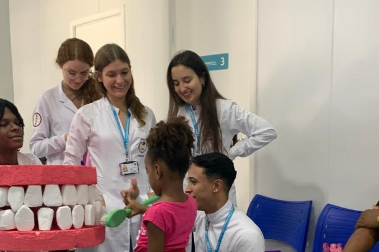

Durante minha formação, desenvolvi diversas habilidades por meio de monitorias, projetos acadêmicos e participação ativa em ligas. Fui monitora nas disciplinas de Patologia, Anatomia e Radiologia, onde tive a oportunidade de consolidar meu conhecimento e auxiliar outros alunos, aprimorando minhas habilidades de ensino e comunicação.
Participei do Projeto Tratamento Restaurador Atraumático (TRA), onde adquiri experiência prática em procedimentos clínicos focados na preservação dos tecidos dentários e em um atendimento humanizado e minimamente invasivo. Esse projeto foi crucial para o meu desenvolvimento como futura profissional, reforçando meu compromisso com a odontologia de qualidade.
Também integrei a Liga Acadêmica de Reparo Tecidual (LARTEC), aprofundando-me no estudo da cicatrização e regeneração de tecidos, aspectos fundamentais para a prática odontológica. Além disso, tive a oportunidade de participar de palestras e eventos científicos , tanto como ouvinte quanto como palestrante, expandindo meu conhecimento e contribuindo com a comunidade acadêmica.
Essas experiências me prepararam de forma ampla, unindo teoria e prática com foco nas necessidades dos pacientes e nas inovações tecnológicas da odontologia.